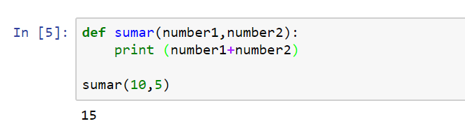

Definición:
Existen muchos otros lenguajes de programación, ¿por qué aprender Python? Python presenta una serie de ventajas que lo hacen muy atractivo, tanto para su uso profesional como para el aprendizaje de la programación.